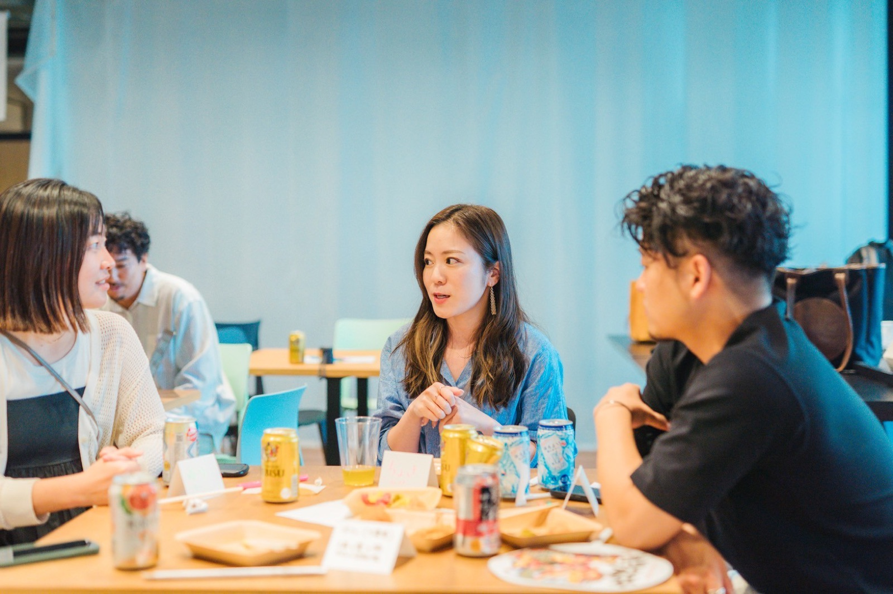

私が大事にしたい
「旅」とは？ 「衝動」とは？ 「仲間」とは？
- 日時
- 2026年5月30日（土）15:00〜18:00
- 会場
- co-ba恵比寿
- 定員
- 15〜20名（先着順）
- 参加費
- 3,500円
人と話すうちに、自分の言葉が見つかっていく3時間。
「仕事をしているいつもの自分」から少し離れて、3つの問いに向き合います。
- 自分が大事にしたい「旅」とは？
- 自分が大事にしたい「衝動」とは？
- 自分が大事にしたい「仲間」とは？
答えを出す場ではありません。じっくり問いに向き合い、自分の中を探る。少人数で対話をするなかで、相手の言葉に触れて、また自分の言葉が見つかっていく。POOLO（ポーロ）が7年以上続けてきた8ヶ月のオンラインプログラムを、3時間に凝縮した一日です。
ここで言う種とは、自分が好き・得意と感じることの、まだ言葉になりきっていない手応えのことです。POOLOでは、これを後からじっくり育てていく探究テーマと呼んでいます。この3時間では、その入口になる一行だけを持ち帰ります。

私が大事にしたい、「旅」とは？「衝動」とは？「仲間」とは？
抽象的な問いを、ごく具体的な原体験に降ろしながら考えます。ひとりずつゆっくりと、自分のことばで言い直してゆきます。
私が、旅先で、戻りたくなくなった時間。日常に戻りたくないと一瞬でも思った、あの場面のなかで、私は何に体を向けていたのか。
私が、頼まれてもいないのに、体が勝手に動いた時。得にもならず誰にも頼まれていないのに、気づいたら手や足が動いていた、あの出どころは何だったのか。
私を、あの時動かした人。自分が動いた場面の隣に、反応をくれた人がいたとしたら、その人は私の何に反応していたのか。

ひとつの問いに、およそ40分。
まずひとりで原体験を思い出し、個人で言語化し、3人組で対話し、最後に一行で書き直す。同じ流れを、3つの問いでくり返します。
-
14:45
受付ワークシートをお渡しします。最初のページに、肩書きでも職業でもない自己紹介を書きとめます。
-
15:00
はじめに・対話の5つのお作法この3時間の進み方と、3人組の対話で守る5つのお作法を、はじめに共有します。
-
15:15
問い01 「旅」とは？戻りたくなくなった時間を思い出す。原体験10分、個人で言語化10分、3人組で対話15分、一行で書き直す5分。
-
16:00
問い02 「衝動」とは？頼まれてもいないのに動いた時へ。同じ流れで、動かされた出どころに矛先を留めます。
-
16:50
小休憩いちど席を立って、頭を休めます。
-
17:00
問い03 「仲間」とは？自分を動かした人の記憶へ。一人では掘り切れない、を体で確かめます。
-
17:45
種を持ち帰る・クロージング問い02の一行を、完成させずに持ち帰る種として受け取ります。最後に、問いを一つだけ置いて終わります。
-
18:00
閉会余韻を持ち帰っていただきます。希望者で軽くお茶をする時間も検討しています。
話す人が、自分の言葉をゆっくり探せるように。
ふだんの会話の癖を、いったん脇に置きます。アドバイスも、まとめも、目指しません。だから、ふだん出てこなかった言葉が出てきます。
-
01
アドバイスをしない解決策ではなく、その人自身の答えを尊重します。
-
02
要約・まとめをしない「つまり○○ということですね」を手放します。整理は本人にお任せします。
-
03
質問だけを返す自分の話にすり替えない。問いだけを、そっと差し出します。
-
04
沈黙を埋めない沈黙は、考えている時間。その人の言葉が降りてくるのを待ちます。
-
05
メモを取らない記録ではなく、いま目の前の人にまっすぐ向きあいます。
当日のワークシート、少しだけ見てみる。
当日お渡しするワークシートの実物を、過去回のものから参考としてご覧いただけます。問いの構造、原体験から書き直しまでの流れが、ページをめくると伝わります。
この場が向いている方／向いていない方。
向いている方
- 一通りこなせるようになって、なのに何も出し切っていない気がする方
- 自分の中で動いている関心を、一人ではうまく言葉にできずにいる方
- 答えを急がず、問いのまま持ち帰ることに意味を感じる方
- 第一回・第二回に参加して、続きを言葉にしてみたい方
- POOLO LIFEに興味があり、3時間でその空気感を体験してみたい方
向いていない方
- 明確な答えやノウハウを、その場で受け取りたい方
- アドバイスをし合って課題を解決する場を求めている方
- 自分の話より、情報や交流を目的に来たい方

この3時間の、もとにあるもの。

この場は、POOLO（ポーロ）という8ヶ月の学びの場で大切にしている考えを、3時間に凝縮したものです。
POOLOは、株式会社TABIPPOと株式会社CODOLIが共同で運営する、旅と教育の学び場。7年以上にわたり、旅を入り口に自分の生き方・働き方を問い直すプログラムを運営してきました。
旅と、問いと、共に創ることを通して、想像もしなかった世界と自分に出会いにいく。受け取る人から、差し出す人へ。POOLOは、その変化が起きる場づくりをしています。
関心が近い人たちが集まると、一人では届かなかった場所まで運ばれていく引力場のような流れが生まれます。今日の3時間は、その入口の一歩です。
引力場とは、自分の関心を探究したい人たちが一定の人数と時間そばにいると、互いの反応が反応を呼び、一人では行き着けなかった場所まで運ばれていく、関係の中の流れのことです。今日はその感覚に、少しだけ触れます。

開催概要
| 日時 | 2026年5月30日（土）15:00〜18:00 受付開始14:45／終了後、希望者で軽くお茶をする時間も検討しています |
|---|---|
| 会場 | co-ba恵比寿 東京・恵比寿（詳しい場所は、お申し込みいただいた方へ個別にご案内します） |
| 定員 | 15〜20名（先着順） 少人数で、お一人おひとりが安心して話せる規模を保ちます |
| 参加費 | 3,500円（税込） ワークシート、お茶菓子代を含みます |
| 持ち物 | 筆記用具 ワークシートはこちらで準備します |
| 主催 | POOLO（株式会社TABIPPO） |
私が大事にしたい、
「旅」とは？「衝動」とは？「仲間」とは？
お申込みは、POOLO公式LINEからお願いしています。友だち追加後、メニューより簡単にお手続きいただけます。
LINEで申し込む今日言葉にした一行は、明日には少し違う形になっているかもしれません。
それでもよくて、今日のあなたが、まだ動いている関心を一つ、たしかな手がかりとして持って帰っていただけたら。